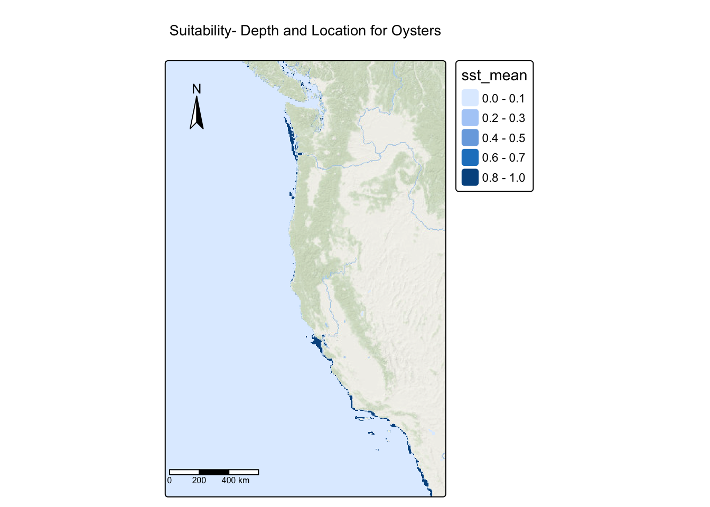
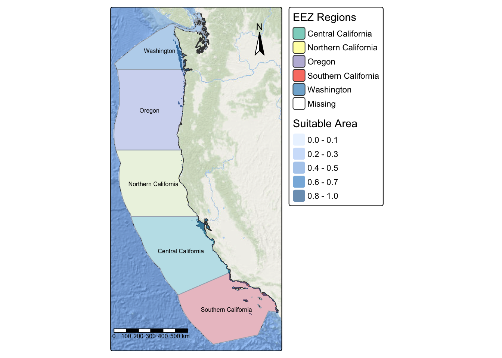

Code
library(tidyverse)
library(sf)
library(terra)
library(dismo)
library(tmap)
library(here)
library(knitr)
library(kableExtra)
library(dplyr)There is a growing global need to sustainably feed expanding human populations, and one promising solution is marine aquaculture1. Aquaculture involves the organized cultivation, feeding, propagation, and production of aquatic organisms for commercial, recreational, or public use. The industry can support food security while contributing to conservation and economic development. Globally, Gentry et al, found environmental and logistical constraints, such as seafloor depth, dissolved oxygen, and ship traffic limit the area suitable for marine aquaculture to less than 0.015% of the world’s oceans. This highlights the importance of carefully identifying viable locations.
Along the U.S. West Coast, aquaculture includes diverse systems and species, from shellfish to finfish, each with unique environmental requirements. As research has shown, oysters represent one of the most commercially significant mollusk species, thriving at depths of 0–70 meters and sea surface temperatures (SSTs) between 11–30°C. Another species of personal interest in this analysis, the California sea hare (Aplysia californica), occurs at depths of 0–22 meters and SSTs of 13.4–27.1°C, making it a candidate for evaluation using similar environmental criteria. Understanding where the suitable ranges of these species overlap within Exclusive Economic Zones (EEZs) is critical for identifying areas where aquaculture can be both sustainable and commercially feasible.
This project examines West Coast EEZs to identify suitable locations for oysters and other species, using SST rasters from 2008-2012, bathymetry data, and EEZ boundaries. The analysis employs raster and vector methods, including resampling, masking, and map algebra, and develops a reusable function to map suitability by species. My personal statement is to understand how environmental constraints shape aquaculture opportunities and to create a spatial workflow that can guide sustainable and commercially feasible marine farming along the West Coast.
All data can be downloaded via this google drive, provided by Ruth Oliver on EDS 223- Homework Assignment 4- Prioritizing potential aquaculture: https://drive.google.com/file/d/1u-iwnPDbe6ZK7wSFVMI-PpCKaRQ3RVmg/view?usp=sharing
Data Source: Historical sea surface temperature (SST) rasters, bathymetry data, and West Coast EEZ shapefiles to identify suitable habitat for marine species aquaculture.
avg_08, avg_09, avg_10, avg_11, avg_12depth.tif. https://www.gebco.net/data-products/gridded-bathymetry-data#areawc_regions_clean.shp. https://www.marineregions.org/eez.phpThese are the libraries that will be used throughout this document.
library(tidyverse)
library(sf)
library(terra)
library(dismo)
library(tmap)
library(here)
library(knitr)
library(kableExtra)
library(dplyr)When adding data into folder, make sure to add data folder to .gitignore to avoid attempting to push any large data onto your reprository.
# load raster dataset
# SST Data
avg_08 <- rast(here("blog_post","prioritizing_west_coast_aquaculture_sites","data","average_annual_sst_2008.tif"))
avg_09 <- rast(here("blog_post","prioritizing_west_coast_aquaculture_sites","data","average_annual_sst_2009.tif"))
avg_10 <- rast(here("blog_post","prioritizing_west_coast_aquaculture_sites","data","average_annual_sst_2010.tif"))
avg_11 <- rast(here("blog_post","prioritizing_west_coast_aquaculture_sites","data","average_annual_sst_2011.tif"))
avg_12 <- rast(here("blog_post","prioritizing_west_coast_aquaculture_sites","data","average_annual_sst_2012.tif"))
depth <- rast(here("blog_post","prioritizing_west_coast_aquaculture_sites","data","depth.tif"))
# Reading in Shapefile- EEZ Data
regions <- st_read(here("blog_post","prioritizing_west_coast_aquaculture_sites","data","wc_regions_clean.shp"), quiet = TRUE)Before proceeding with spatial analysis, it is important to check that all Coordinate Reference Systems (CRS) match in order to combine or overlay spatial data. When CRS do not match, spatial analysis and manipulation cannot be completed accurately. Here I check if all CRS match across the SST files, depth raster, and regions vector data. If any files do not match, they will be transformed to match the reference CRS (avg_08). In this first code chunk I will show if the CRS match it will print CRS match, and if it does not match it will give a warning and continue with a transformation. After the transformation it will print a statement that says CRS now match with.
# Check CRS from SST files
if(crs(avg_08) == crs(avg_09)) {
print("Coordinate reference systems match:)")
} else{
warning("Updating coordinate reference systems to match :(")}[1] "Coordinate reference systems match:)"# check and transform coordinate reference systems
if (crs(avg_08) == crs(depth)) {
print("Coordinate reference systems match :)")
} else {
warning("Updating coordinate reference systems to match :(")
# transform raster to match avg_08
depth <- project(depth, crs(avg_08))
print("Depth coordinate reference systems match after transformation :)")
}Warning: Updating coordinate reference systems to match :([1] "Depth coordinate reference systems match after transformation :)"In this code chunk, I will do the check the CRS for the rest of the files.
# check and transform coordinate reference systems
if(crs(avg_08) == crs(avg_10)) {
print("Coordinate reference systems match:)")
} else{
warning("Updating coordinate reference systems to match :(")}
# check and transform coordinate reference systems
if(crs(avg_08) == crs(avg_11)) {
print("Coordinate reference systems match:)")
} else{
warning("Updating coordinate reference systems to match :(")}
# check and transform coordinate reference systems
if(crs(avg_08) == crs(avg_12)) {
print("Coordinate reference systems match :)")
} else{
warning("Updating coordinate reference systems to match :(")}
# check and transform coordinate reference systems
if (crs(avg_08) == crs(regions)) {
print("Coordinate reference systems match :)")
} else {
warning("Updating coordinate reference systems to match :(")
# transform raster to match avg_08
regions <- st_transform(regions, crs(avg_08))
print("Regions coordinate reference systems match after transformation :)")
} The original SST files have temperature values in Kelvin. Here, we combine all five monthly SST rasters (avg_08-avg_12) into a stack, calculate the mean sea surface temperature, and convert the values from Kelvin to Celsius by subtracting 273.15.
# Combining rasters
sst_stack <- c(avg_08, avg_09, avg_10, avg_11, avg_12)
# Mean of all Rasters and Converting temp values K -> °C
sst_mean <- mean(sst_stack) - 273.15
names(sst_mean) <- "sst_mean"For spatial analysis to work correctly, rasters must have matching extents, resolutions, and alignment. Here, I crop the depth data to match the SST extent, then resample it to ensure both rasters have identical cell sizes and positions. Finally, I verify that resolution, extent, and CRS all match between the two datasets.
# Obtain geographic extent/bounding box of species occurrences
st_bbox(sst_mean) xmin ymin xmax ymax
-131.98475 29.99305 -114.98672 49.98842 # Crop depth to the SST extent
depth_crop <- crop(depth, ext(sst_mean))
# Resample depth to match SST resolution
depth_resampled <- resample(depth_crop, sst_mean, method = "near")
# Check Resolution
if (all(res(sst_mean) == res(depth_resampled))) {
print("Resolutions matche :)")
} else {
print("Fix resolution :(")
}[1] "Resolutions matche :)"# Check Extent
if (all(ext(sst_mean) == ext(depth_resampled))) {
print("Extent matches :)")
} else {
print("Fix Extent :(")
}[1] "Extent matches :)"# Check CRS
if (crs(sst_mean) == crs(depth_resampled)) {
print("CRS matches :)")
} else {
print("Fix CRS :(")
}[1] "CRS matches :)"To identify suitable locations for oyster aquaculture, we need to find areas that meet both temperature and depth requirements. This is done by reclassifying each raster to indicate suitable (1) vs. unsuitable (0) conditions, then combining them to find locations where both criteria are satisfied. - Oysters have optimal growth at depths between *0-70 meters* below sea level and between *11-30°C*.
# Reclassification matrix for: Suitable temperatures (11-30°C)
rcl_sst <- matrix(c(-Inf, 11, 0,
11, 30, 1,
30, Inf, 0), ncol = 3, byrow = TRUE)
# Use classify function
reclassified_sst <- terra::classify(sst_mean, rcl = rcl_sst)
# Define the reclassification matrix for Depth
rcl_depth <- matrix(c(-Inf, -70, 0,
-70, 0, 1,
0, Inf, 0), ncol = 3, byrow = TRUE)
# Use classify function
reclassified_depth <- classify(depth_resampled, rcl_depth)
# Combine Oyster and Depth for suitability
suitable <- reclassified_sst * reclassified_depth # Min = 0, Max = 1
# Map it
tm_shape(suitable)+
tm_raster()+
tm_title("Suitability- Depth and Location for Oysters")+
tm_layout(
legend.outside.position = TRUE)+
tm_scale_bar(position = c(-.01, 0.08)) +
tm_compass(position = c("left", "top"))+
tm_basemap("Esri.OceanBasemap")
This map shows areas where both temperature and depth requirements are met (shown in dark blue). This visualization serves as a check to ensure the reclassification process worked correctly before proceeding with further analysis.
We want to determine the total suitable area within each EEZ in order to rank zones by priority. To do so, we need to find the total area of suitable locations within each EEZ. This will be completed by select suitable cells within West Coast EEZs find area of grid cells and find the total suitable area within each EEZ.
eez_rast <- rasterize(regions,
# template- using extent, resolution, crs
suitable,
# use region column
field = "rgn")
# Mask
suitable_mask <- mask(suitable,regions)
# Cell size
cell_area <- cellSize(suitable_mask, unit = "km")
# Sum suitable area by EEZ
area_by_eez_zonal <- zonal(cell_area * suitable_mask, eez_rast, fun = "sum", na.rm = TRUE) %>%
rename("suitable_area_km2" = area) %>%
mutate(suitable_area_km2 = as.numeric(suitable_area_km2)) %>%
as_tibble() %>%
arrange(desc(suitable_area_km2))
area_by_eez_zonal %>%
mutate(suitable_area_km2 = round(suitable_area_km2, 2)) %>%
kbl(
caption = "Suitable Area by EEZ (km²)",
col.names = c("EEZ Region", "Suitable Area (km²)")
) %>%
kable_classic(full_width = FALSE, html_font = "Arial")| EEZ Region | Suitable Area (km²) |
|---|---|
| Central California | 4069.88 |
| Southern California | 3757.28 |
| Washington | 2378.31 |
| Oregon | 1074.27 |
| Northern California | 178.03 |
In this table we can now see the suitable area covered by each EEZ region for Oysters. Let’s go ahead and see view this in a map to visually see our results.
tm_shape(regions) +
tm_polygons("rgn", palette = "Set3", title = "EEZ Regions", alpha = 1) +
tm_shape(suitable_mask) +
tm_raster(alpha = 0.6, title = "Suitable Area") +
tm_shape(regions) +
# Adding labels
tm_text("rgn", size = 0.5) +
tm_layout(
legend.outside.position = TRUE)+
tm_scale_bar(position = c(-.01, 0.08)) +
tm_compass(position = c("right", "top"))+
tm_basemap("Esri.OceanBasemap")
The map displays EEZ regions with suitable habitat areas overlaid. Because the suitable area raster and EEZ polygon boundaries are stored separately, they appear as distinct layers. In the following step, we will join the area calculations to the EEZ polygons to determine what percentage of each zone is suitable for oyster aquaculture.
To understand not just the absolute area, but what proportion of each EEZ is suitable for oyster aquaculture, we join the suitable area calculations to the EEZ spatial data and calculate the percentage of each region that meets the habitat requirements.
#Set as simple features to conserve geometry
region_sf <- st_as_sf(regions)
# Join zonal data and calculate percentage
eez_sf <- region_sf %>%
left_join(area_by_eez_zonal, by = "rgn") %>%
mutate(perc_area_km2 = (suitable_area_km2/area_km2) * 100)
# Table
eez_sf %>%
st_drop_geometry() %>%
as_tibble() %>%
dplyr::select(rgn, suitable_area_km2, perc_area_km2) %>%
mutate(
suitable_area_km2 = round(suitable_area_km2, 2),
perc_area_km2 = round(perc_area_km2, 2)
) %>%
kbl(
caption = "Suitable Area and Percentage by EEZ",
col.names = c("EEZ Region", "Suitable Area (km²)", "Percent of Region (%)")
) %>%
kable_classic(full_width = FALSE, html_font = "Arial")| EEZ Region | Suitable Area (km²) | Percent of Region (%) |
|---|---|---|
| Oregon | 1074.27 | 0.60 |
| Northern California | 178.03 | 0.11 |
| Central California | 4069.88 | 2.01 |
| Southern California | 3757.28 | 1.82 |
| Washington | 2378.31 | 3.56 |
# Setting color palette
colors <- c("#a6761d","#e9c46a","#90be6d","#43aa8b","#577590", "#6a4c93")
# Map It
tm_shape(eez_sf) +
tm_polygons(
"suitable_area_km2",
palette = colors,
style = "cont",
title = "Suitable Area (km²)",
alpha = 0.9
) +
tm_text(
"rgn",
size = 0.45,
col = "black",
fontface = "bold",
bgcol = "antiquewhite",
bgcol_alpha = 0.2) +
tm_layout(
main.title = "Suitable Area for Oyster Aquaculture in California EEZs\nBased on Temperature & Depth Criteria",
main.title.size = 0.8, # Controls title + subtitle size
main.title.fontface = "bold",
legend.outside = TRUE,
legend.outside.position = "right",
component.autoscale = FALSE,
outer.margins = c(0.01, 0.25, 0.01, 0.05)
) +
tm_scale_bar(position = c(-.02, 0.08)) +
tm_compass(
type = "arrow",
position = c("right", "top")
)+
tm_basemap("Esri.OceanBasemap")
This map visualizes the total suitable area for oyster aquaculture within each West Coast EEZ. The color gradient indicates the magnitude of suitable habitat, with darker colors representing larger suitable areas. Central and Southern California EEZs (darker shades) contain the most extensive suitable habitat, while Northern California shows minimal suitable area. The spatial pattern reflects the combined influence of ocean temperature and bathymetry meeting oyster habitat requirements.
To view habitat suitability for multiple species, I developed a reusable function that automates the entire workflow that was ran previously: reclassification matrix, calculating suitable areas by EEZ, and generating summary outputs. This function can be applied to any marine species with known temperature and depth requirements. Before continuing,CRS, Extent, Resolution, and Geometry all need to match before using function.
suit_func <- function(
sst_raster,
depth_raster,
eez_sf,
min_sst,
max_sst,
min_depth,
max_depth,
species_name
) {
# Reclassify Depth
rcl_depth <- matrix(c(
-Inf, min_depth, 0,
min_depth, max_depth, 1,
max_depth, Inf, 0
), byrow = TRUE, ncol = 3)
depth_suit <- classify(depth_raster, rcl_depth)
# Reclassify SST
rcl_sst <- matrix(c(
-Inf, min_sst, 0,
min_sst, max_sst, 1,
max_sst, Inf, 0
), byrow = TRUE, ncol = 3)
sst_suit <- classify(sst_raster, rcl_sst)
# Combine Stack
suit_env <- depth_suit * sst_suit
# Mask
suit_mask <- mask(suit_env,regions)
# Rasterize EEZ polygons to match raster grid
eez_rast <- terra::rasterize(eez_sf, suit_mask, field = "rgn")
# Zonal area (km^2)
cell_area <- cellSize(suit_mask, unit = "km")
area_table <- zonal(cell_area * suit_mask, eez_rast, fun = "sum", na.rm = TRUE) %>%
rename("suitable_area_km2_new" = area) %>%
mutate(suitable_area_km2 = as.numeric(suitable_area_km2_new)) %>%
as_tibble() %>%
arrange(desc(suitable_area_km2))
# Join back to EEZ polygons for mapping
eez_joined <- left_join(eez_sf, area_table, by = "rgn")
# Create table
eez_table <- eez_joined %>%
st_drop_geometry() %>%
# to view for each species
as.data.frame() %>%
# select columns to show in figure
dplyr::select(rgn, suitable_area_km2_new) %>%
# rename column
rename(Region = rgn) %>%
# new column
mutate(suitable_area_km2_new = round(suitable_area_km2_new, 2)) %>%
rename("Suitable Area(km²)" = suitable_area_km2_new)
# Plot It!
suit_func_map <-
tm_shape(eez_joined) +
tm_polygons(
"suitable_area_km2_new",
palette = "-mako",
style = "cont",
title = "Suitable Area (km²)"
) +
tm_text("rgn",
size = 0.45,
col = "black",
fontface = "bold",
bgcol = "antiquewhite",
bgcol_alpha = 0.2) +
tm_layout(
main.title = paste(
"Suitable Area for", species_name,
"\nBased on Preferred Temperature and Depth"
),
main.title.size = 0.8,
main.title.fontface = "bold",
legend.outside = TRUE,
legend.outside.position = "right",
component.autoscale = FALSE,
outer.margins = c(0.01, 0.25, 0.01, 0.05)
) +
tm_scale_bar(position = c(-.02, 0.08)) +
tm_compass(type = "arrow", position = c("right", "top"))+
tm_basemap("OpenStreetMap")
table_eez<- eez_table %>%
# Add a cleaned up table
kable(digits = 2, caption = paste("Suitable Area for", species_name)) %>%
kable_styling()
# This will return Map and Table
return(table_eez)
return(suit_func_map)
}I was personally interested in the California sea hare, becuase they are considered algae cleaners and are used for their biomedical usage for aquacultures. Using the SeaLifeBase 2, I was able to find the depth range and the sea level range, which are the parameters needed for the function above. The function will create a table and a map to visually see the suitable areas for the California sea hare. - Depth range: 0 - 22 m - Sea Level: 13.4 - 27.1
# California sea hare
suit_func(
sst_raster = sst_mean,
depth_raster = depth_resampled,
eez_sf = eez_sf,
min_sst = 13.4,
max_sst = 27.1,
min_depth = -22,
max_depth = 0,
species_name = "California Sea Hare (<i>Aplysia californica</i>)"
)| Region | Suitable Area(km²) |
|---|---|
| Oregon | 0.00 |
| Northern California | 0.00 |
| Central California | 118.79 |
| Southern California | 499.63 |
| Washington | 0.00 |
Here I am testing another marine species, California spiny lobster, 3 to test the function and insure it works for another species with the parameters, which occupies habitat between 0-150 meters below sea level and between 12-24°C.
suit_func(
sst_raster = sst_mean,
depth_raster = depth_resampled,
eez_sf = eez_sf,
min_sst = 12,
max_sst = 24,
min_depth = -150,
max_depth = 0,
species_name = "California spiny lobster (<i>Panulirus Interruptus</i>)"
)| Region | Suitable Area(km²) |
|---|---|
| Oregon | 585.03 |
| Northern California | 0.00 |
| Central California | 3992.41 |
| Southern California | 8093.85 |
| Washington | 175.57 |
Overall, this workflow successfully identified suitable habitat areas for marine species, with the ability to map suitability for any species available through SeaLifeBase. However, the analysis is limited by the use of average SST data from 2008–2012 and the exclusion of other important environmental and human driven factors such as habitat type, food resources, and coastal activities. Future work should incorporate more recent or seasonal temperature datasets, additional environmental predictors, and potentially other spatial layers to improve accuracy and support real world management or aquaculture planning.
@online{tolteca2025,
author = {Tolteca, Marie and Tolteca, Marie},
title = {Prioritizing {Aquaculture} {Sites} {Along} the {West}
{Coast}},
date = {2025-12-11},
url = {https://marietolteca00.github.io/blog_post/prioritizing_west_coast_aquaculture_sites},
langid = {en}
}